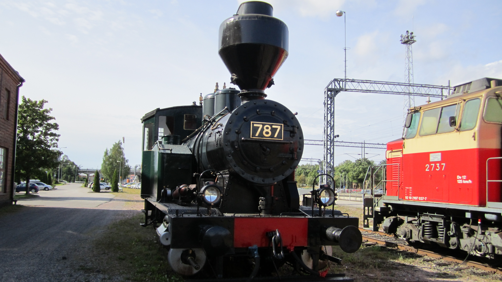

| detaljer |
nästa |
index |
A20 |
I denna presentation har alla sidor ovanstående navigations balk, dock modifierad beroende på behov.
Utöver detta har vi två skilda presentationer, Allmänt och Station för station . Tanken bakom är det skall vara möjligt att med navigationsbalken kunna göra resan Kapellskär - Karis här på web-sidorna antingen som en presentation över skärgårdsbanan eller se banan hur den är tänkt att dras över fjärdar, skär och öar. I den detaljerade presentationen syns det väl om det är fråga om tunnel, bro eller järnvägsbank som gäller.

Planen är en tvåspårig järnvägsförbindelse från en plats vid nuvarande färjhamnen i Kapellskär till Karis järnvägsstation.
Banan Kapellskär-Karis, som den här i presentationen kallas, är en högst enastående järnvägsbana och kommer att kräva helt annan teknik än vad som används i traditionellt järnvägsbygge. Genom att banan går ute till sjöss och i ett hav som fryser till, finns det idag ingen motsvarighet. Antagligen är det mera nytta att kunna teknik om båtkonstruktion en järnväg. Även kunskap om tunnel konstruktion har sin egen lilla detalj, tunnelkonstruktion mitt ute i havet och ner till ett djup av över 60m. Angående tunnelkonstruktion finns det dock referenser t.ex. Dover-Calais, Fehmar-sund osv.
Valet av spårbredd, den svenska, baserar sig på "hoppet" att man i Sverige verkligen bygger ut järnväg ända till Kapellskär. Tanken är att kunna starta Stockholmståget från Helsingfors eller Esbo, om det var Stockholm som var slutmålet.
Banan är planerad som en höghastighets järnvägsbana, för hastigheter typ 300 - 320 km/h. Genom att aldrig stoppa/stanna ett tåg på själva banan utan om tåget skall stanna på en station så stannar tåget på ett stickspår, ej på banan, blir det möjligt att utnyttja den fulla kapaciteten av banan. Talet om ett tåg som stannar bara för ett ögonblick och genast efter det accelerar snabbt, är definitivt ej en politik för denna bana .